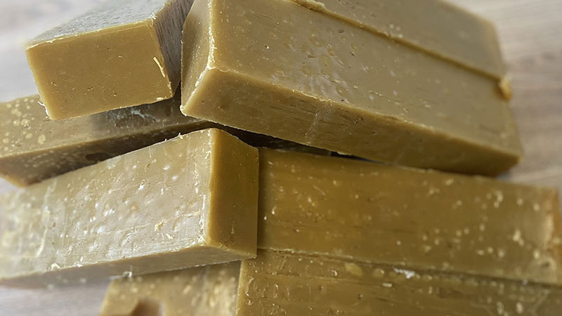

Slack Wax Overview
Slack wax is a versatile petroleum-derived byproduct commonly used in candle manufacturing, rubber processing, polishes, board sizing, and other industrial applications. It is valued for its waxy texture, oil content, and ability to improve performance in products that require body, gloss, water resistance, or controlled consistency.
What It Is
Slack wax is produced during the dewaxing of lubricating oils and typically contains a mixture of wax and oil. Depending on the grade, it can be light or heavy, with different melting points and oil contents that make it suitable for a wide range of downstream uses. This material is often processed further into refined waxes, semi-refined wax products, emulsions, or industrial blending components. Because of its natural hydrocarbon structure, slack wax is a practical feedstock for manufacturers looking for a cost-effective raw material with stable industrial performance.
Main Benefits
One of the main advantages of slack wax is its flexibility. It can be used directly in some applications or refined into higher-purity wax products, giving manufacturers more options in production and formulation. Slack wax also supports smooth processing, improved surface finish, moisture resistance, and better binding characteristics in end products. Its availability in different grades allows buyers to select the right specification based on melting point, oil content, and intended use.
Typical Applications
Slack wax is widely used in candle production, where it helps create structure and control burn characteristics. It is also used in rubber compounding, matches, board coating, packaging, adhesives, and certain polishes and waterproofing products. In industrial supply chains, slack wax is often purchased as a reliable intermediate product for further refining or direct use. Buyers usually look for consistent quality, clear specification sheets, and dependable shipment terms when sourcing this commodity.
Why Choose It
Slack wax remains an important industrial raw material because it combines affordability, versatility, and broad manufacturing use. For companies working in wax, chemical, or packaging industries, it can be a practical input that supports both product performance and cost control. While our core expertise is bitumen, we also source and supply related commodities like slack wax for verified buyers.
